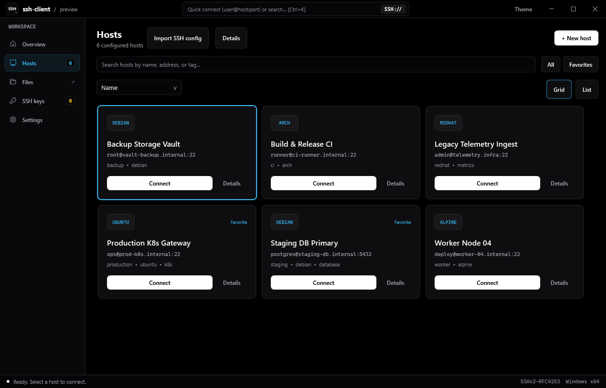
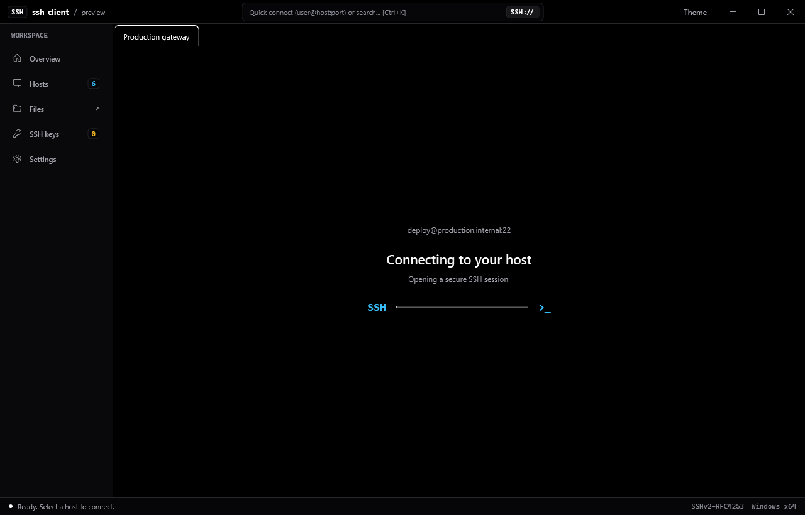
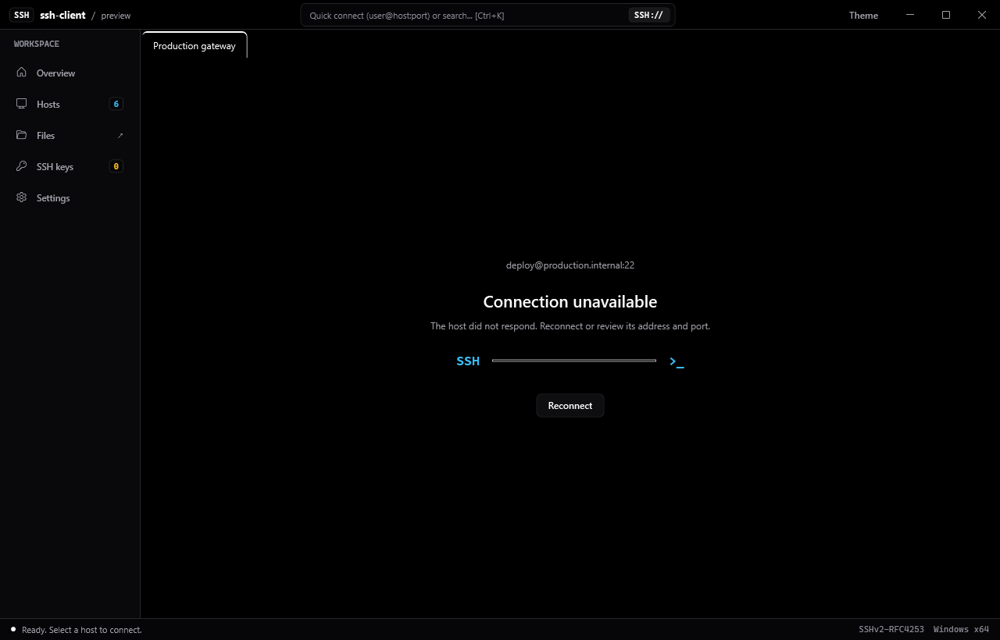

Air-gapped, offline-first terminal and host manager engineered on Erlang/OTP. No Electron bloat, zero cloud telemetry, hardware-backed credentials.
Real native app captures in the dark theme, using demo hostnames.



Key architectural foundations designed for engineers managing critical infrastructure.
Direct Erlang/OTP crypto and SSH subsystem. High-throughput terminal multiplexing with zero reliance on Electron or external node daemons.
Credentials and private keys are encrypted locally using DPAPI on Windows and native OS keyrings on Linux. Never uploaded, never synced to cloud.
Integrated dual-pane directory explorer for instant file uploads, permission inspection, and bulk sync alongside your active terminal shell.
Host telemetry auto-throttles when the desktop window is minimized or unfocused, preserving CPU cycles and laptop battery life.
In-place checksummed binary verification against official GitHub Releases. Check, download, and apply updates with zero friction.
No mandatory accounts, no cloud sync, no tracking beacons. Fully operational behind strict corporate proxies and air-gapped enclaves.
A clear, objective comparison across memory footprint, architecture, and licensing.
| Capability | ssh-client | Termius | PuTTY | OpenSSH CLI |
|---|---|---|---|---|
| Architecture & Engine | Erlang/OTP + Native C# | Electron (Chromium) | Win32 C Monolith | C POSIX Binary |
| Memory Baseline | ~45 MB Idle | ~350 MB Idle | ~5 MB Idle | ~3 MB Idle |
| Continuous Telemetry | Native Embedded | None | None | Manual (top/htop) |
| Cloud Account Requirement | Zero. 100% Offline | Required / Cloud Sync | Zero | Zero |
| Credential Encryption | OS Keychain (DPAPI) | Proprietary Cloud Vault | Plaintext Registry | ssh-agent / Filesystem |
| Side-by-Side SFTP | Integrated | Paid Tier Only | Separate App (PSFTP) | CLI only (sftp) |
| License Model | MIT Open Source | Commercial Subscription | MIT / BSD | BSD |
Detailed hardware, operating system, and protocol compliance specifications.
| Specification | Detail | Standard / Notes |
|---|---|---|
| SSH Protocol Support | SSH-2.0 (RFC 4253, RFC 4252, RFC 4254) | Full handshake negotiation, ed25519, rsa-sha2-512 |
| SFTP Subsystem | SFTP Version 3 / 4 | Streaming transfers, recursive listings, permissions |
| Windows Desktop Shell | WPF / .NET Framework 4.8.1 x64 | Hardware DirectWrite typography, dark UI theme |
| Backend Engine | Elixir 1.18.2 / Erlang/OTP 27 | Zero Node.js or Chromium runtime overhead |
| Supported Platforms | Windows 10, 11 (x64) • Linux (x86_64) | Standalone self-contained installers and archives |
Choose your preferred distribution format from the latest published GitHub release.
Guided setup with Start Menu integration, desktop shortcut, and uninstaller.
Zero installation required. Extract to any directory or USB drive and launch.
Precompiled Erlang/Elixir binary distribution for Ubuntu, Debian, Fedora, and Arch.